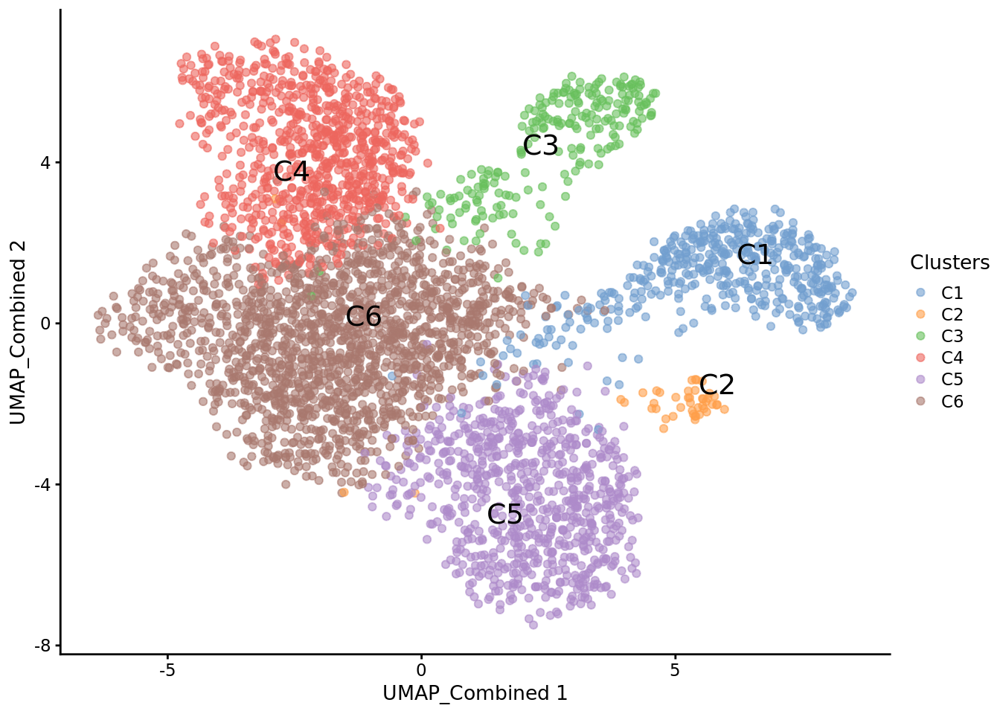
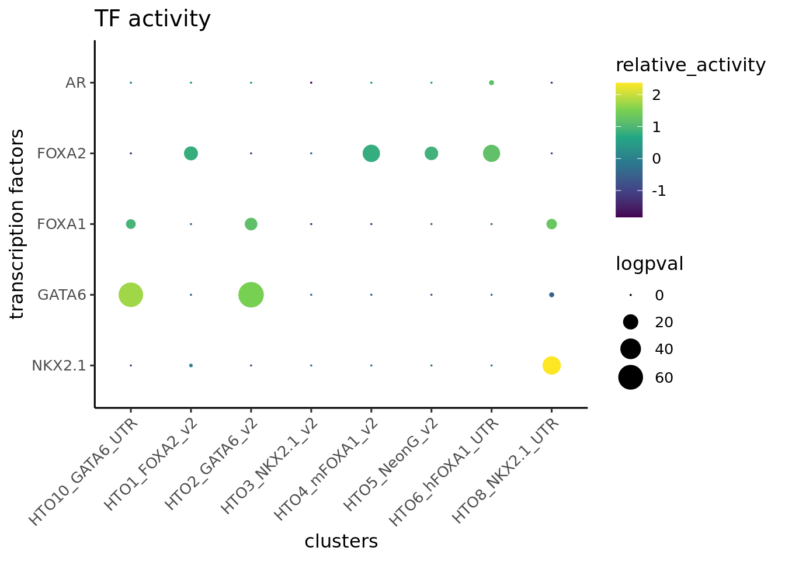
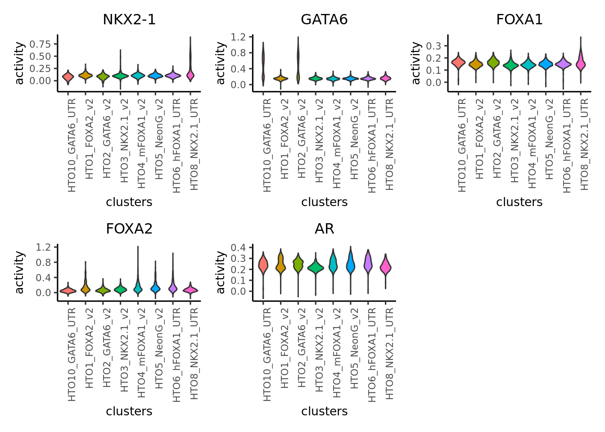
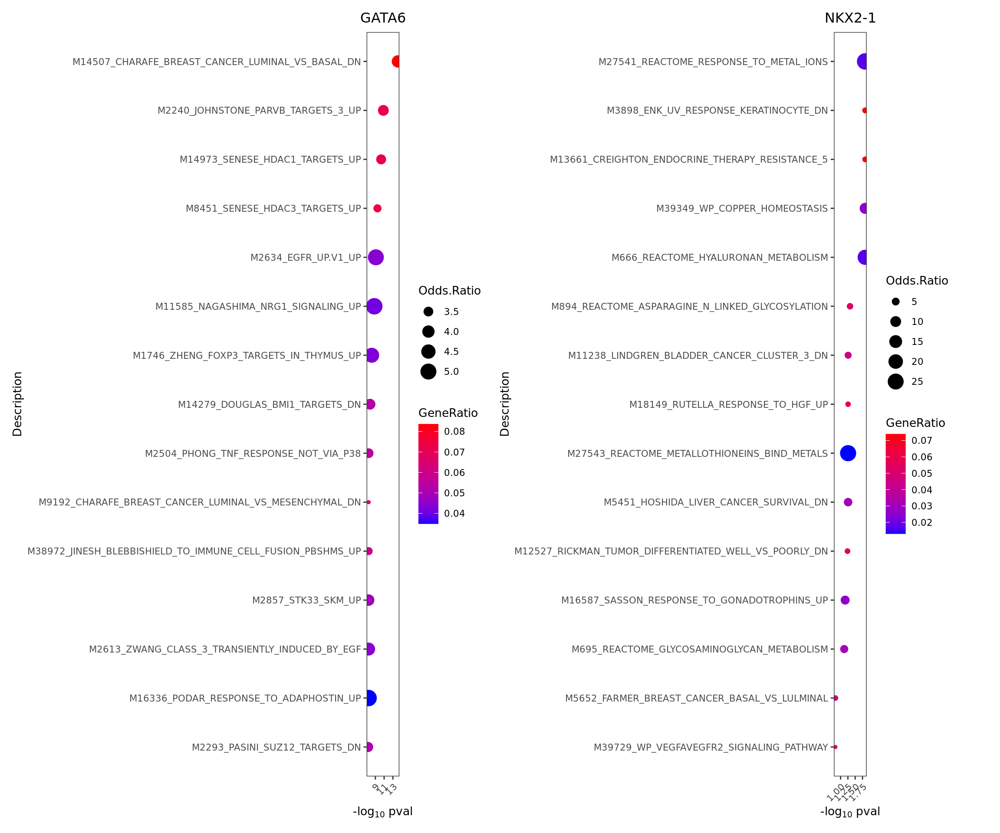

2 Multiome - ArchR workflow
This tutorial walks through the same dataset used in the “multiome tutorial - archR workflow”. This is a dataset generated by infecting LNCaP cells with NKX2-1 and GATA6 to examine the effects of these TFs on AR activity.
2.1 Installation
Epiregulon is currently available on R/dev
library(epiregulon)Alternatively, you could install from github
devtools::install_github(repo ='xiaosaiyao/epiregulon')
library(epiregulon)2.2 Data preparation
Single cell preprocessing needs to performed by user’s favorite methods prior to using Epiregulon. The following components are required:
1. Peak matrix from scATAC-seq
2. Gene expression matrix from either paired or unpaired scRNA-seq. RNA-seq integration needs to be performed for unpaired dataset.
3. Dimensionality reduction matrix from with either single modalities or joint scRNA-seq and scATAC-seq
Multiome data can now be conveniently processed by initiate.archr and then gp.sa.archr to obtain peak matrices. Finally, the archR project can be uploaded into DatasetDB as a MultiAssayExperiment object using maw.archr::importArchr or maw.archr::create.mae.with.multiple.sces.from.archr
# load the MAE object
library(scMultiome)## Loading required package: AnnotationHub## Loading required package: BiocFileCache## Loading required package: dbplyr##
## Attaching package: 'AnnotationHub'## The following object is masked from 'package:Biobase':
##
## cache## Loading required package: ExperimentHub## Loading required package: MultiAssayExperiment##
## Attaching package: 'scMultiome'## The following object is masked from 'package:scRNAseq':
##
## listDatasetsmae <- scMultiome::reprogramSeq()## snapshotDate(): 2023-10-24## see ?scMultiome and browseVignettes('scMultiome') for documentation## loading from cache# peak matrix
PeakMatrix <- mae[["PeakMatrix"]]
# expression matrix
GeneExpressionMatrix <- mae[["GeneExpressionMatrix"]]
rownames(GeneExpressionMatrix) <- rowData(GeneExpressionMatrix)$name
assay(GeneExpressionMatrix) <- as(log2(assay(GeneExpressionMatrix)+1), "CsparseMatrix")
# dimensional reduction matrix
reducedDimMatrix <- reducedDim(mae[['TileMatrix500']], "LSI_ATAC")Visualize singleCellExperiment by UMAP
# transfer UMAP_combined from TileMatrix to GeneExpressionMatrix
reducedDim(GeneExpressionMatrix, "UMAP_Combined") <- reducedDim(mae[['TileMatrix500']], "UMAP_Combined")
scater::plotReducedDim(GeneExpressionMatrix,
dimred = "UMAP_Combined",
text_by = "Clusters",
colour_by = "Clusters")
2.3 Quick start
2.3.1 Retrieve bulk TF ChIP-seq binding sites
First, we retrieve the information of TF binding sites collected from Cistrome and ENCODE ChIP-seq, which are hosted on Genomitory. Currently, human genomes HG19 and HG38 and mouse mm10 are available.
grl <- getTFMotifInfo(genome = "hg38")## snapshotDate(): 2023-10-24## see ?scMultiome and browseVignettes('scMultiome') for documentation## loading from cachehead(grl)## GRangesList object of length 6:
## $`5-hmC`
## GRanges object with 24048 ranges and 0 metadata columns:
## seqnames ranges strand
## <Rle> <IRanges> <Rle>
## [1] chr1 10000-10685 *
## [2] chr1 13362-13694 *
## [3] chr1 29631-29989 *
## [4] chr1 40454-40754 *
## [5] chr1 135395-135871 *
## ... ... ... ...
## [24044] chrY 56864377-56864627 *
## [24045] chrY 56876124-56876182 *
## [24046] chrM 84-2450 *
## [24047] chrM 13613-14955 *
## [24048] chrM 15134-16490 *
## -------
## seqinfo: 25 sequences from an unspecified genome; no seqlengths
##
## ...
## <5 more elements>2.3.2 Link ATAC-seq peaks to target genes
Next, we compute peak to gene correlations using a custom algorithm that has similar performance to ArchR’s P2G function.
set.seed(1010)
p2g <- calculateP2G(peakMatrix = PeakMatrix,
expMatrix = GeneExpressionMatrix,
reducedDim = reducedDimMatrix,
exp_assay = "normalizedCounts")## Using epiregulon to compute peak to gene links...## performing k means clustering to form metacells## Computing correlationp2g## DataFrame with 30181 rows and 8 columns
## idxATAC chr start end idxRNA target Correlation distance
## <integer> <character> <integer> <integer> <integer> <array> <matrix> <integer>
## 1 2 chr1 818831 819331 14 AL669831.2 0.521484 57721
## 2 5 chr1 858735 859235 17 LINC01128 0.649037 30938
## 3 5 chr1 858735 859235 22 AL645608.4 0.559331 52934
## 4 10 chr1 920987 921487 28 PERM1 0.528659 57540
## 5 17 chr1 942448 942948 28 PERM1 0.689034 36079
## ... ... ... ... ... ... ... ... ...
## 30177 126568 chrX 154534816 154535316 36407 IKBKG 0.622140 4926
## 30178 126570 chrX 154541878 154542378 36406 G6PD 0.560829 2466
## 30179 126571 chrX 154542392 154542892 36407 IKBKG 0.556282 0
## 30180 126590 chrX 155228844 155229344 36426 CLIC2 0.627319 103268
## 30181 126590 chrX 155228844 155229344 36427 AC234781.1 0.613156 1205802.3.3 Add TF motif binding to peaks
The next step is to add the TF binding information by overlapping regions of the peak matrix with the bulk chip-seq database loaded in 2. The user can supply either an archR project path and this function will retrieve the peak matrix, or a peakMatrix in the form of a Granges object or RangedSummarizedExperiment.
overlap <- addTFMotifInfo(grl = grl, p2g = p2g, peakMatrix = PeakMatrix)## Computing overlap...## Success!head(overlap)## idxATAC idxTF tf
## 145 2 2 5-mC
## 146 2 25 AR
## 147 2 260 Epitope tags
## 148 2 710 NFYB
## 149 2 743 NR3C1
## 150 2 798 PGR2.3.4 Generate regulons
A long format dataframe, representing the inferred regulons, is then generated. The dataframe consists of three columns:
- tf (transcription factor)
- target gene
- peak to gene correlation between tf and target gene
regulon <- getRegulon(p2g = p2g, overlap = overlap, aggregate = FALSE)
regulon## DataFrame with 4402893 rows and 10 columns
## idxATAC chr start end idxRNA target distance idxTF tf
## <integer> <character> <integer> <integer> <integer> <character> <integer> <integer> <character>
## 1 2 chr1 818831 819331 14 AL669831.2 57721 2 5-mC
## 2 2 chr1 818831 819331 14 AL669831.2 57721 25 AR
## 3 2 chr1 818831 819331 14 AL669831.2 57721 260 Epitope tags
## 4 2 chr1 818831 819331 14 AL669831.2 57721 710 NFYB
## 5 2 chr1 818831 819331 14 AL669831.2 57721 743 NR3C1
## ... ... ... ... ... ... ... ... ... ...
## 4402889 126590 chrX 155228844 155229344 36426 CLIC2 103268 329 GATA2
## 4402890 126590 chrX 155228844 155229344 36426 CLIC2 103268 1044 SUMO2
## 4402891 126590 chrX 155228844 155229344 36427 AC234781.1 120580 296 FOXA1
## 4402892 126590 chrX 155228844 155229344 36427 AC234781.1 120580 329 GATA2
## 4402893 126590 chrX 155228844 155229344 36427 AC234781.1 120580 1044 SUMO2
## corr
## <matrix>
## 1 0.521484
## 2 0.521484
## 3 0.521484
## 4 0.521484
## 5 0.521484
## ... ...
## 4402889 0.627319
## 4402890 0.627319
## 4402891 0.613156
## 4402892 0.613156
## 4402893 0.6131562.3.5 Network pruning (highly recommended)
Epiregulon prunes the network by performing tests of independence on the observed number of cells jointly expressing transcription factor (TF), regulatory element (RE) and target gene (TG) vs the expected number of cells if TF/RE and TG are independently expressed. We implement two tests, the binomial test and the chi-square test. In the binomial test, the expected probability is P(TF, RE) * P(TG), and the number of trials is the total number of cells, and the observed successes is the number of cells jointly expressing all three elements. In the chi-square test, the expected probability for having all 3 elements active is also P(TF, RE) * P(TG) and the probability otherwise is 1- P(TF, RE) * P(TG). The observed cell count for the active category is the number of cells jointly expressing all three elements, and the cell count for the inactive category is n - n_triple.
We calculate cluster-specific p-values if users supply cluster labels. This is useful if we are interested in cluster-specific networks. The pruned regulons can then be used to visualize differential networks for transcription factors of interest. See section on differential networks.
pruned.regulon <- pruneRegulon(expMatrix = GeneExpressionMatrix,
exp_assay = "normalizedCounts",
peakMatrix = PeakMatrix,
peak_assay = "counts",
test = "chi.sq",
regulon,
clusters = GeneExpressionMatrix$Clusters,
prune_value = "pval",
regulon_cutoff = 0.05
)
pruned.regulon2.3.6 Add Weights
While the `pruneRegulon’ function provides statistics on the joint occurrence of TF-RE-TG, we would like to further estimate the strength of regulation. Biologically, this can be interpreted as the magnitude of gene expression changes induced by transcription factor activity. Epiregulon estimates the regulatory potential using one of the four measures: 1) correlation between TF and target gene expression, 2) mutual information between the TF and target gene expression, 3) Wilcoxon test statistics of target gene expression in cells jointly expressing all 3 elements vs cells that do not, or 4) log 2 fold difference of target gene expression in cells jointly expressing all 3 elements vs cells that do not.
Three measures (correlation, Wilcoxon statistics and log 2 fold difference) give both the magnitude and directionality of changes whereas mutational information is always positive. The correlation and mutual information statistics are computed on the grouped pseudobulks by user-supplied cluster labels, whereas the Wilcoxon and log fold change group cells based on the joint expression of TF, RE and TG in each single cell.
regulon.w <- addWeights(regulon = pruned.regulon,
expMatrix = GeneExpressionMatrix,
exp_assay = "normalizedCounts",
peakMatrix = PeakMatrix,
peak_assay = "counts",
clusters = GeneExpressionMatrix$Clusters,
block_factor = NULL,
tf_re.merge = TRUE,
method = "corr")
regulon.w2.3.7 (Optional) Annotate with TF motifs
So far the gene regulatory network was constructed from TF ChIP-seq exclusively. Some users would prefer to further annotate the regulatory elements with the presence of motifs. We provide an option to annotate peaks with motifs from the Cisbp database. If no motifs are present for this particular factor (as in the case of co-factors or chromatin modifiers), we return NA. If motifs are available for a factor and the RE contains a motif, we return 1. If motifs are available and the RE does not contain a motif, we return 0.
If the user has already performed motif annotation with ArchR, we could also retrieve the results directly. See ?addMotifScore
regulon.w.motif <- addMotifScore(regulon = regulon.w,
peaks = rowRanges(PeakMatrix),
species = "human",
genome = "hg38")## annotating peaks with motifs##
## Attaching package: 'XVector'## The following object is masked from 'package:plyr':
##
## compact##
## Attaching package: 'Biostrings'## The following object is masked from 'package:grid':
##
## pattern## The following object is masked from 'package:base':
##
## strsplit##
## Attaching package: 'rtracklayer'## The following object is masked from 'package:BiocIO':
##
## FileForFormat## The following object is masked from 'package:AnnotationHub':
##
## hubUrl# if desired, set weight to 0 if no motif is found
regulon.w.motif$weight[regulon.w.motif$motif == 0] <- 02.3.8 Calculate TF activity
Finally, the activities for a specific TF in each cell are computed by averaging expressions of target genes linked to the TF weighted by the test statistics of choice, chosen from either correlation, mutual information, Wilcoxon test statistics or log fold change. \[y=\frac{1}{n}\sum_{i=1}^{n} x_i * weights_i\] where \(y\) is the activity of a TF for a cell \(n\) is the total number of targets for a TF \(x_i\) is the log count expression of target i where i in {1,2,…,n} \(weights_i\) is the weight of TF and target i
score.combine <- calculateActivity(expMatrix = GeneExpressionMatrix,
regulon = regulon.w,
mode = "weight",
method = "weightedMean",
exp_assay = "normalizedCounts",
normalize = FALSE)## calculating TF activity from regulon using weightedmean## aggregating regulons...## creating weight matrix...## calculating activity scores...## normalize by the number of targets...2.3.9 Perform differential activity
markers <- findDifferentialActivity(activity_matrix = score.combine,
groups = GeneExpressionMatrix$hash_assignment,
pval.type = "some",
direction = "up",
test.type = "t")Take the top TFs
markers.sig <- getSigGenes(markers, topgenes = 5 )## Using a logFC cutoff of 0.1 for class HTO10_GATA6_UTR## Using a logFC cutoff of 0 for class HTO1_FOXA2_v2## Using a logFC cutoff of 0.1 for class HTO2_GATA6_v2## Using a logFC cutoff of 0 for class HTO3_NKX2.1_v2## Using a logFC cutoff of 0 for class HTO4_mFOXA1_v2## Using a logFC cutoff of 0 for class HTO5_NeonG_v2## Using a logFC cutoff of 0 for class HTO6_hFOXA1_UTR## Using a logFC cutoff of 0 for class HTO8_NKX2.1_UTR2.3.10 Visualize the results
First visualize the known differential TFs by bubble plot
plotBubble(activity_matrix = score.combine,
tf = c("NKX2-1","GATA6","FOXA1","FOXA2", "AR"),
clusters = GeneExpressionMatrix$hash_assignment)
Then visualize the most differential TFs by clusters
plotBubble(activity_matrix = score.combine,
tf = markers.sig$tf,
clusters = GeneExpressionMatrix$hash_assignment)
Visualize the known differential TFs by violin plot. Note there is no activity calculated for SOX2 because the expression of SOX2 is 0 in all cells.
plotActivityViolin(activity_matrix = score.combine,
tf = c("NKX2-1","GATA6","FOXA1","FOXA2", "AR"),
clusters = GeneExpressionMatrix$hash_assignment)
Visualize the known differential TFs by UMAP
plotActivityDim(sce = GeneExpressionMatrix,
activity_matrix = score.combine,
tf = c("NKX2-1","GATA6","FOXA1","FOXA2", "AR"),
dimtype = "UMAP_Combined",
label = "Clusters",
point_size = 1,
ncol = 3)
In contrast, the gene expression of the TFs is very sparse
plotActivityDim(sce = GeneExpressionMatrix,
activity_matrix = counts(GeneExpressionMatrix),
tf = c("NKX2-1","GATA6","FOXA1","FOXA2", "AR"),
dimtype = "UMAP_Combined",
label = "Clusters",
point_size = 1,
ncol = 3,
limit = c(0,2),
colors = c("grey","blue"),
legend.label = "GEX")
Visualize the gene expression of the regulons by heatmap
plotHeatmapRegulon(sce=GeneExpressionMatrix,
tfs=c("GATA6","NKX2-1"),
regulon=regulon.w,
regulon_cutoff=0.1,
downsample=1000,
cell_attributes="Clusters",
col_gap="Clusters",
exprs_values="counts",
name="regulon heatmap")
plotHeatmapActivity(activity=score.combine,
sce=GeneExpressionMatrix,
tfs=rownames(score.combine),
downsample=5000,
cell_attributes="Clusters",
col_gap="Clusters",
name = "Activity") ### Geneset enrichment
### Geneset enrichment
Sometimes we are interested to know what pathways are enriched in the regulon of a particular TF. We can perform geneset enrichment using the enricher function from clusterProfiler.
#retrieve genesets
H <- EnrichmentBrowser::getGenesets(org = "hsa",
db = "msigdb",
cat = "H",
gene.id.type = "SYMBOL" )## Using cached version from 2023-11-15 17:40:42C2 <- EnrichmentBrowser::getGenesets(org = "hsa",
db = "msigdb",
cat = "C2",
gene.id.type = "SYMBOL" )## Using cached version from 2023-11-12 20:06:04C6 <- EnrichmentBrowser::getGenesets(org = "hsa",
db = "msigdb",
cat = "C6",
gene.id.type = "SYMBOL" )## Using cached version from 2023-11-15 17:40:46#combine genesets and convert genesets to be compatible with enricher
gs <- c(H, C2, C6)
gs.list <- do.call(rbind,lapply(names(gs), function(x)
{data.frame(gs=x, genes=gs[[x]])}))
enrichresults <- regulonEnrich(TF = c("GATA6","NKX2-1"),
regulon = regulon.w,
weight = "weight",
weight_cutoff = 0,
genesets = gs.list)## GATA6## NKX2-1#plot results
enrichPlot(results = enrichresults ) ### Network analysis
We can visualize the genesets as a network
plotGseaNetwork(tf = names(enrichresults),
enrichresults = enrichresults,
p.adj_cutoff = 0.1,
ntop_pathways = 10)
2.3.11 Differential networks
We are interested in understanding the differential networks between two conditions and determining which transcription factors account for the differences in the topology of networks. The pruned regulons with cluster-specific test statistics computed by pruneRegulon can be used to generate cluster-specific networks based on user-defined cutoffs and to visualize differential networks for transcription factors of interest. In this dataset, the GATA6 gene was only expressed in cluster 1 (C1) and NKX2-1 was only expressed in cluster 3 (C3). If we visualize the target genes of GATA6, we can see that C1 has many more target genes of GATA6 compared to C5, a cluster that does not express GATA6. Similarly, NKX2-1 target genes are confined to C3 which is the only cluster that exogenously expresses NKX2-1.
plotDiffNetwork(pruned.regulon,
cutoff = 1,
tf = c("GATA6"),
weight = "stats",
clusters = c("C1","C5"),
layout = "stress")## Building graph using weight as edge weights
plotDiffNetwork(pruned.regulon,
cutoff = 1,
tf = c("NKX2-1"),
weight = "stats",
clusters = c("C3","C5"),
layout = "stress")## Building graph using weight as edge weights
We can also visualize how transcription factors relate to other transcription factors in each cluster.
selected <- which(pruned.regulon$stats[,"C1"]> 1 &
pruned.regulon$tf %in% c("GATA6","FOXA1","AR"))
C1_network <- buildGraph(pruned.regulon[selected,],
weights = "stats",
cluster = "C1")## Building graph using stats as edge weightsselected <- which(pruned.regulon$stats[,"C5"]> 1 &
pruned.regulon$tf %in% c("GATA6","FOXA1","AR"))
C5_network <- buildGraph(pruned.regulon[selected,],
weights = "stats",
cluster = "C5")## Building graph using stats as edge weightsplotEpiregulonNetwork(C1_network,
layout = "sugiyama",
tfs_to_highlight = c("GATA6","FOXA1","AR")) +
ggplot2::ggtitle ("C1")
plotEpiregulonNetwork(C5_network,
layout = "sugiyama",
tfs_to_highlight = c("GATA6","FOXA1","AR")) +
ggplot2::ggtitle ("C5") To systematically examine the differential network topology between two clusters, we perform an edge subtraction between two graphs, using weights computed by
To systematically examine the differential network topology between two clusters, we perform an edge subtraction between two graphs, using weights computed by pruneRegulon. We then calculate the degree centrality of the weighted differential graphs and if desired, normalize the differential centrality against the total number of edges. The default normalization function is sqrt as it preserves both the difference in the number of edges (but scaled by sqrt) and the differences in the weights. If the user only wants to examine the differences in the averaged weights, the FUN argument can be changed to identity. Finally, we rank the transcription factors by (normalized) differential centrality.
# rank by differential centrality
C1_network <- buildGraph(pruned.regulon, weights = "stats", cluster="C1")## Building graph using stats as edge weightsC5_network <- buildGraph(pruned.regulon, weights = "stats", cluster="C5")## Building graph using stats as edge weightsdiff_graph <- buildDiffGraph(C1_network, C5_network)
diff_graph <- addCentrality(diff_graph)
diff_graph <- normalizeCentrality(diff_graph)
rank_table <- rankTfs(diff_graph)
library(ggplot2)
ggplot(rank_table, aes(x = rank, y = centrality)) +
geom_point() +
ggrepel::geom_text_repel(data = head(rank_table, 5), aes(label = tf)) +
theme_classic()
2.4 Session Info
sessionInfo()## R version 4.3.0 (2023-04-21)
## Platform: x86_64-pc-linux-gnu (64-bit)
## Running under: Ubuntu 18.04.6 LTS
##
## Matrix products: default
## BLAS: /usr/local/lib/R/lib/libRblas.so
## LAPACK: /usr/local/lib/R/lib/libRlapack.so; LAPACK version 3.11.0
##
## Random number generation:
## RNG: L'Ecuyer-CMRG
## Normal: Inversion
## Sample: Rejection
##
## locale:
## [1] LC_CTYPE=en_US.UTF-8 LC_NUMERIC=C LC_TIME=C LC_COLLATE=C LC_MONETARY=C
## [6] LC_MESSAGES=C LC_PAPER=C LC_NAME=C LC_ADDRESS=C LC_TELEPHONE=C
## [11] LC_MEASUREMENT=C LC_IDENTIFICATION=C
##
## time zone: Etc/UTC
## tzcode source: system (glibc)
##
## attached base packages:
## [1] grid stats4 stats graphics grDevices utils datasets methods base
##
## other attached packages:
## [1] BSgenome.Hsapiens.UCSC.hg38_1.4.5 BSgenome_1.69.1 rtracklayer_1.61.2
## [4] BiocIO_1.11.0 Biostrings_2.69.2 XVector_0.41.2
## [7] DelayedArray_0.27.10 HDF5Array_1.29.3 scMultiome_1.1.2
## [10] MultiAssayExperiment_1.27.5 ExperimentHub_2.9.1 AnnotationHub_3.9.2
## [13] BiocFileCache_2.9.1 dbplyr_2.3.4 rhdf5_2.45.1
## [16] RcppArmadillo_0.12.6.4.0 Rcpp_1.0.11 sparseMatrixStats_1.13.4
## [19] data.table_1.14.8 stringr_1.5.0 plyr_1.8.9
## [22] magrittr_2.0.3 gtable_0.3.4 gtools_3.9.4
## [25] gridExtra_2.3 devtools_2.4.5 usethis_2.1.6
## [28] ArchR_1.0.3 org.Mm.eg.db_3.18.0 AnnotationDbi_1.63.2
## [31] msigdbr_7.5.1 epiregulon_1.0.34 scater_1.29.4
## [34] ggplot2_3.4.4 scuttle_1.11.3 scRNAseq_2.15.0
## [37] SingleCellExperiment_1.23.0 SummarizedExperiment_1.31.1 Biobase_2.61.0
## [40] GenomicRanges_1.53.3 GenomeInfoDb_1.37.7 IRanges_2.35.3
## [43] S4Vectors_0.39.3 BiocGenerics_0.47.1 MatrixGenerics_1.13.2
## [46] matrixStats_1.0.0 dorothea_1.13.0 bookdown_0.36
## [49] rmarkdown_2.25 Matrix_1.6-0
##
## loaded via a namespace (and not attached):
## [1] R.methodsS3_1.8.2 GSEABase_1.63.0
## [3] progress_1.2.2 urlchecker_1.0.1
## [5] poweRlaw_0.70.6 vctrs_0.6.3
## [7] digest_0.6.31 png_0.1-8
## [9] shape_1.4.6 ggrepel_0.9.4
## [11] magick_2.8.1 bcellViper_1.37.0
## [13] MASS_7.3-60 reshape2_1.4.4
## [15] httpuv_1.6.11 foreach_1.5.2
## [17] qvalue_2.33.0 withr_2.5.0
## [19] xfun_0.39 ggfun_0.1.3
## [21] ellipsis_0.3.2 memoise_2.0.1
## [23] ggbeeswarm_0.7.2 gson_0.1.0
## [25] clusterProfiler_4.9.5 profvis_0.3.8
## [27] tidytree_0.4.5 GlobalOptions_0.1.2
## [29] KEGGgraph_1.61.0 R.oo_1.25.0
## [31] prettyunits_1.1.1 KEGGREST_1.41.4
## [33] promises_1.2.0.1 httr_1.4.6
## [35] restfulr_0.0.15 pak_0.6.0
## [37] rhdf5filters_1.13.5 ps_1.7.5
## [39] rstudioapi_0.15.0 miniUI_0.1.1.1
## [41] generics_0.1.3 DOSE_3.27.3
## [43] processx_3.8.1 babelgene_22.9
## [45] curl_5.0.0 zlibbioc_1.47.0
## [47] ScaledMatrix_1.9.1 ggraph_2.1.0
## [49] polyclip_1.10-6 GenomeInfoDbData_1.2.11
## [51] SparseArray_1.1.12 interactiveDisplayBase_1.39.0
## [53] pracma_2.4.2 xtable_1.8-4
## [55] doParallel_1.0.17 evaluate_0.21
## [57] S4Arrays_1.1.6 hms_1.1.3
## [59] irlba_2.3.5.1 colorspace_2.1-0
## [61] filelock_1.0.2 reticulate_1.34.0
## [63] readr_2.1.4 Rgraphviz_2.45.0
## [65] later_1.3.1 viridis_0.6.4
## [67] ggtree_3.9.1 lattice_0.22-5
## [69] shadowtext_0.1.2 XML_3.99-0.14
## [71] cowplot_1.1.1 pillar_1.9.0
## [73] nlme_3.1-163 iterators_1.0.14
## [75] caTools_1.18.2 compiler_4.3.0
## [77] beachmat_2.17.17 stringi_1.7.12
## [79] GenomicAlignments_1.37.0 MPO.db_0.99.7
## [81] crayon_1.5.2 abind_1.4-5
## [83] gridGraphics_0.5-1 locfit_1.5-9.8
## [85] graphlayouts_1.0.1 bit_4.0.5
## [87] dplyr_1.1.3 fastmatch_1.1-4
## [89] codetools_0.2-19 BiocSingular_1.17.1
## [91] bslib_0.5.1 GetoptLong_1.0.5
## [93] mime_0.12 splines_4.3.0
## [95] circlize_0.4.15 HDO.db_0.99.1
## [97] EnrichmentBrowser_2.31.5 knitr_1.44
## [99] blob_1.2.4 utf8_1.2.3
## [101] seqLogo_1.67.0 clue_0.3-65
## [103] BiocVersion_3.18.0 AnnotationFilter_1.25.0
## [105] fs_1.6.2 checkmate_2.2.0
## [107] DelayedMatrixStats_1.23.9 pkgbuild_1.4.0
## [109] GSVA_1.49.8 ggplotify_0.1.2
## [111] tibble_3.2.1 callr_3.7.3
## [113] statmod_1.5.0 tzdb_0.4.0
## [115] tweenr_2.0.2 pkgconfig_2.0.3
## [117] BSgenome.Hsapiens.UCSC.hg19_1.4.3 tools_4.3.0
## [119] cachem_1.0.8 BSgenome.Mmusculus.UCSC.mm10_1.4.3
## [121] RSQLite_2.3.1 viridisLite_0.4.2
## [123] DBI_1.1.3 fastmap_1.1.1
## [125] scales_1.2.1 Rsamtools_2.17.0
## [127] sass_0.4.6 patchwork_1.1.3
## [129] FNN_1.1.3.2 BiocManager_1.30.22
## [131] graph_1.79.4 farver_2.1.1
## [133] scatterpie_0.2.1 tidygraph_1.2.3
## [135] yaml_2.3.7 cli_3.6.1
## [137] purrr_1.0.2 motifmatchr_1.23.0
## [139] lifecycle_1.0.3 uwot_0.1.16
## [141] bluster_1.11.4 sessioninfo_1.2.2
## [143] backports_1.4.1 BiocParallel_1.35.4
## [145] annotate_1.79.0 rjson_0.2.21
## [147] parallel_4.3.0 ape_5.7-1
## [149] limma_3.57.11 jsonlite_1.8.7
## [151] edgeR_3.99.6 TFBSTools_1.39.0
## [153] bitops_1.0-7 HPO.db_0.99.2
## [155] bit64_4.0.5 yulab.utils_0.1.0
## [157] BiocNeighbors_1.19.0 CNEr_1.37.0
## [159] jquerylib_0.1.4 metapod_1.9.0
## [161] GOSemSim_2.27.3 dqrng_0.3.1
## [163] R.utils_2.12.2 lazyeval_0.2.2
## [165] shiny_1.7.5.1 htmltools_0.5.5
## [167] enrichplot_1.21.3 GO.db_3.18.0
## [169] rappdirs_0.3.3 ensembldb_2.25.1
## [171] glue_1.6.2 TFMPvalue_0.0.9
## [173] RCurl_1.98-1.12 treeio_1.25.4
## [175] scran_1.29.3 igraph_1.5.1
## [177] R6_2.5.1 tidyr_1.3.0
## [179] labeling_0.4.3 GenomicFeatures_1.53.3
## [181] cluster_2.1.4 pkgload_1.3.2
## [183] Rhdf5lib_1.23.2 aplot_0.2.2
## [185] DirichletMultinomial_1.43.0 tidyselect_1.2.0
## [187] vipor_0.4.5 ProtGenerics_1.33.1
## [189] ggforce_0.4.1 xml2_1.3.5
## [191] rsvd_1.0.5 munsell_0.5.0
## [193] htmlwidgets_1.6.2 fgsea_1.27.1
## [195] ComplexHeatmap_2.17.0 RColorBrewer_1.1-3
## [197] biomaRt_2.57.1 rlang_1.1.1
## [199] remotes_2.4.2 fansi_1.0.4
## [201] Cairo_1.6-1 beeswarm_0.4.0